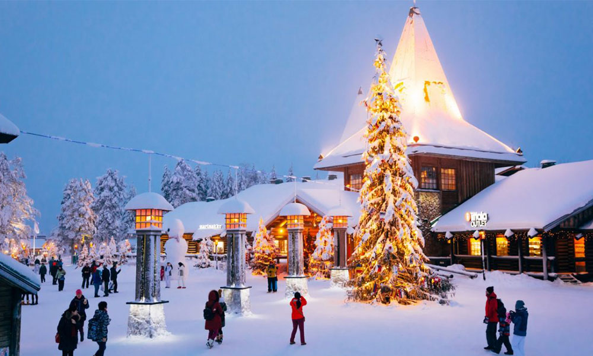

안녕하세요. 제 이름은 박연정입니다.
MBTI: ENFJ(정의로운 사회운동가)
태어난 곳
제가 태어난 곳은 경상북도 구미입니다.
2000년 5월 8일에 태어나, 현재 나이는 만 24세 입니다.
(태어난 곳은 구미이지만, 실제로 살았던 기간은 6개월 정도이며
그 이후로는 직장으로 인하여 잠깐 서울 거주 한 것을 제외하고는 쭉 수원에 거주하고 있습니다.😁)
가봤던 곳 / 가보고 싶은 곳
제주 공항
Welcome to JEJU!

선글라스 돌하르방
선글라스 돌하르방 따라하기

함덕해수욕장
다시 가보고 싶은 곳
가봤던 곳 중 가장 좋았던 곳은 '제주도' 입니다.
제주도는 약 한달 전에 태어나서 처음으로 가봤던 '나홀로 여행'이였기에 사실 출발 전까지만 해도 걱정이 많았던 만큼
저에게 있어서는 인생에서 하나의 도전이기도 하였습니다. 하지만, 생각보다도 혼자 너무 잘 돌아다니기도 했고,
힐링을 목적으로 갔던 여행이였던만큼 아무 계획이 없이 갔었는데도 알차고 행복하게 여행했었습니다.
인생에서의 하나의 도전을 잘 해냈기에 뿌듯하기도하며, 무계획 속에서도 많은 힐링을 할 수 있었기에
가장 기억에 많이 남는 여행이 되었습니다.
(가장 좋았던 곳은 '함덕해수욕장'이라는 곳인데, 바다가 정말 이쁘고 중간중간 앉아서 바다를 볼 수 있는 곳도
많아서 너무 좋았던 곳이였습니다. 누군가가 제주도에 가게 된다면 꼭 한번 추천해주고 싶은 곳입니다.😄)
추천하고 싶은 음식


1. 자전거를 타다가 마주쳤던 '동문재래시장'에서 사와서 인생 처음 먹어본 '고등어 회'
2. 함덕해수욕장 앞쪽에 있는 '해녀김밥'에서 먹었던 '딱새우 김밥'
가보고 싶은 곳은 '핀란드' 입니다.
핀란드는 북유럽의 반도 국가로, 스웨덴, 노르웨이의 동쪽, 러시아의 서쪽과 국경을 맞대고 있으며 수도는 헬싱키입니다.
세계에서 가장 북쪽에 있는 나라이지만 대서양과 발트해의 영향으로 대체로 따뜻한 편인 나라입니다
이러한 핀란드에서 유명한 것에는 '오로라'와 '산타마을'이 있습니다.
저의 오랜 버킷리스트 중 하나가 오로라를 직접 관찰해 보는 것이고,
개인적으로 산타와 크리스마스 분위기를 좋아하기에
핀란드가 이 두가지를 모두 충족할 수 있는 가장 적합한 곳이라고 생각하기에 꼭 가보고 싶은 곳이 되었습니다.
오로라(aurora)?
오로라(영어: aurora)는 태양에서 방출(放出)되는 플라즈마 입자(전자 또는 양성자)가 지구 대기권 상층부의 자기장과 마찰하여 빛을 내는 광전(光電) 현상이다. 이들 입자의 유래는 주로 태양에서 방출된 것이 대부분인데, 태양풍을 따라 지구 근처에 왔다가 지구 자기장에 이끌려 대기로 진입하는 것이다. 자극(磁極)에 가까운 북반구와 남반구의 고위도 지방, 즉 극지방에 가까울수록 관측이 쉽기 때문에 극광(極光)이라고도 한다. 즉, 북극에서는 북극광, 남극에서는 남극광으로 불린다. 또 지구 이외에 목성, 토성, 화성 등에도 오로라 현상이 있는 것으로 알려졌다.

산타마을?
'산타 클로스의 공식 고향 인 Rovaniemi의 산타 클로스 마을에 오신 것을 환영합니다!'
전 세계의 연말 풍경이 그렇듯 핀란드도 크리스마스가 다가오면 축제 분위기로 후끈 달아오른다고 합니다.
사실은 이 시즌에 핀란드는 다른 나라들에 비해 조금 더 특별하다고 합니다.
그 이유가 바로 이곳에는 크리스마스의 상징인 '산타클로스'가 살기 때문입니다.
(하지만! 실제 로바니에미는 산타와 아무런 연관이 없는 곳이며 유명 관광지도 아니였습니다.
1920년대 핀란드 라디오 방송 진행자가 "산타가 로바니에미에 살고 있다"라는 발언을 한 후
그 말을 믿은 해외 관광객들이 방문하고 어린이들은 눈이 많이 오는 핀란드 라플란드 깊은 산속에
산타가 살고 있다고 믿기 시작한 것이라고 합니다.😄)

산타클로스 마을은 핀란드 라피 주의 로바니에미(Rovaniemi) 시내에서 약 8km 정도 떨어진 한적한 숲에 있습니다.
마을에는 산타클로스의 사무실, 전 세계 어린이들의 이야기가 쓰인 책들이 있는 도서관, 산타클로스와 편지를 주고받을 수 있는 우체국 등이 있습니다.
실제 이곳에는 매년 수십만 통의 편지가 오는데, 모든 편지에 산타클로스가 일일이 답장을 해줍니다.
다만 언어가 너무 다양해 산타의 비서들이 ‘통역’을 도와주고 있다고 합니다.

(💓이런 산타마을은 위의 사진처럼 눈이 내릴 때 더더욱 아름다워진다고 합니다.💓)
가장 해보고 싶은 체험은 순록 썰매 체험인데요, '루돌프'라는 이름으로 더 익숙한 순록을 직접 만나고 끌어주는 썰매를 타보는 체험을 즐길 수 있습니다. 순록이 끌어주는 썰매를 타면서 직접 썰매 작동법도 배우고, 흰 눈밭에서 썰매를 조종해 볼 수 있다고 합니다. 또한 썰매를 끌어주는 사람인 '무셔'에게 지역과 관련된 이야기와 순록의 이야기도 들을 수 있다고 하여 핀란드에 가게되면 꼭 한번은 체험해보고 싶은 액티비티 입니다.
@ Santa Claus Village
산타마을을 가고 싶은 마음이 생길 때마다 종종 유튜브에서 제공하고 있는 실시간 영상을 보기도 합니다.😄
좋아하는 음식


좋아하는 음식은 떡볶이와 치킨입니다.
떡볶이 중에서는 유독 '엽기떡볶이'를 좋아하고, 치킨 중에서는 '뿌링클'을 좋아합니다.
그래서 스트레스를 받은 날이면 이 두가지 음식과 함께 음주 하는 것을 좋아하는 편입니다.😄
좋아하는 것
좋아하는 것은 운동입니다.
좋아하는 운동 종목: 풋살, 스쿼시, 농구
풋살
여자 풋살 동아리에서 주 1회씩 풋살을 하며 즐기고 있으며, 포지션은 주로 공격수를 맡고 있습니다.
풋살과 축구의 차이점을 알아보고 싶다면?
(자세한 설명은 위 굵은 글씨를 눌러보세요.)
스쿼시
스쿼시를 하다보면, 공을 잘 맞출때마다 타겟감이 오게 됩니다. 그때마다 쌓여있는 스트레스가 풀리는 기분이 들어서 좋아하게 되었습니다. 스쿼시에서는 잘 '찌그러지는(squashable)' 말랑말랑한 공을 사용하는데,
이러한 공을 벽에대고 치며 반복적으로 하는 유산소 운동 중 하나입니다.
스쿼시에 대해 더 알아보고 싶다면?
(자세한 설명은 위 굵은 글씨를 눌러보세요.)
농구
방과후 수업으로 농구를 배우면서 관심을 가지게 되었고, 그 후로도 종종 농구장을 찾아가서 자유투 연습을 하곤 했습니다.
오락실에서 농구게임을 하는 것을 좋아하여 가게되면 꼭 하게 되는 편입니다.